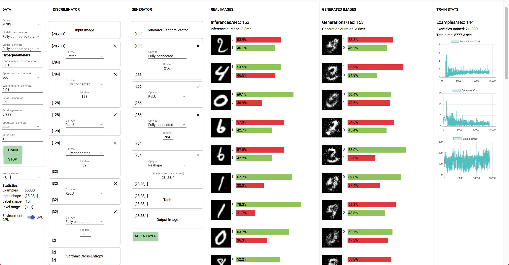
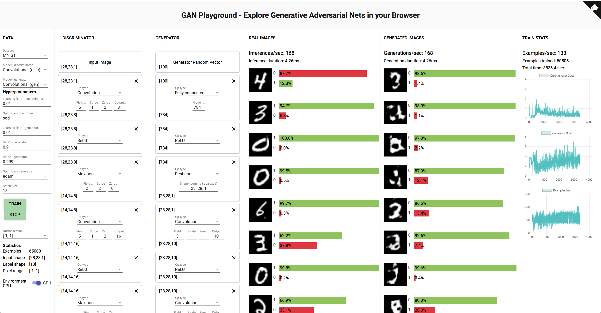
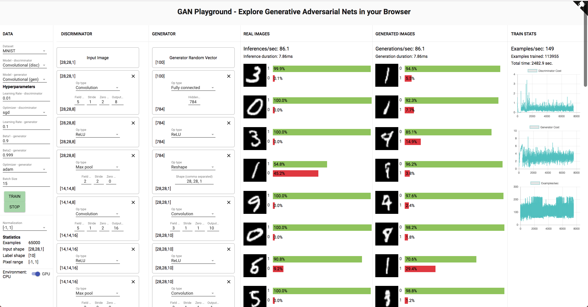
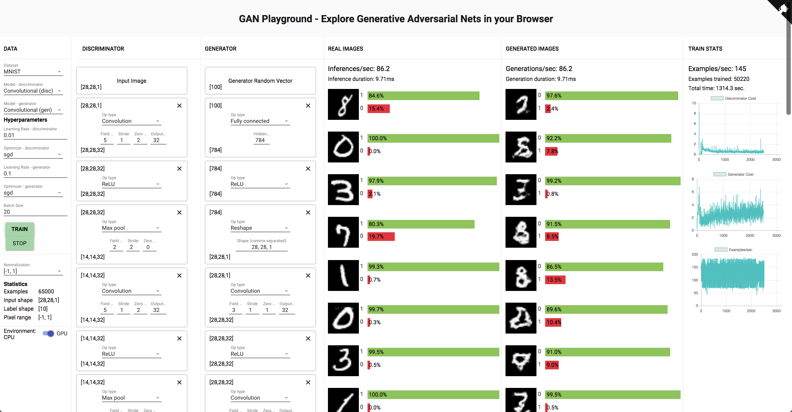
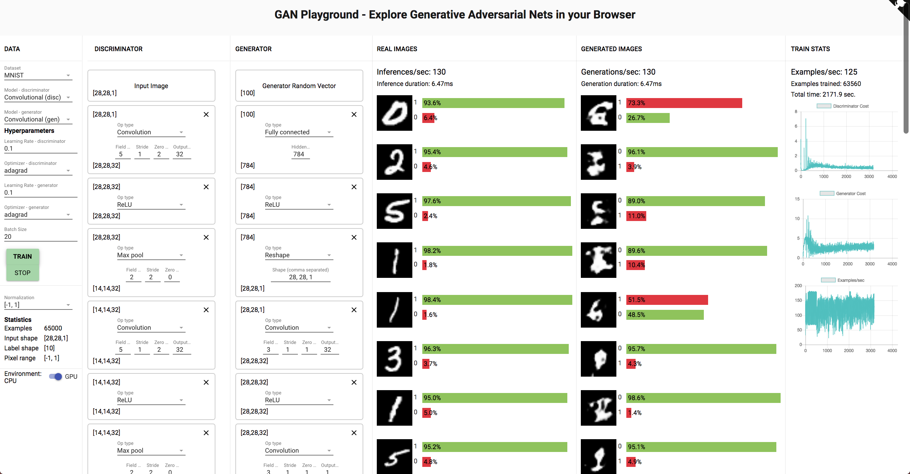
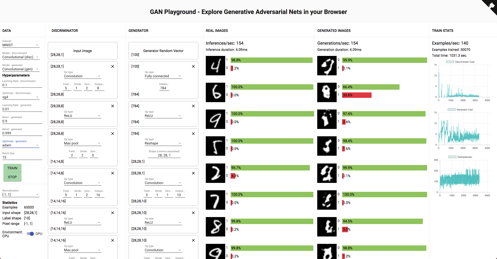
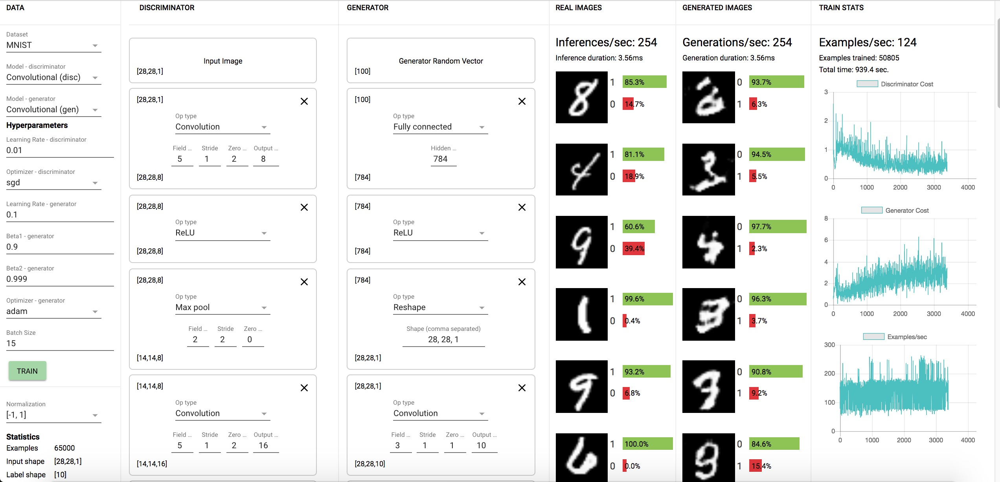
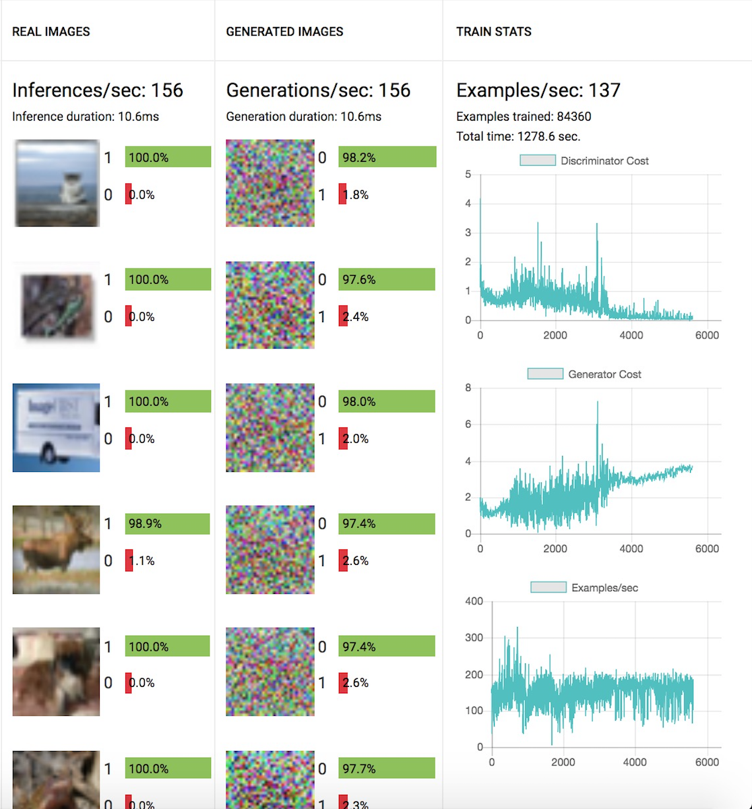

6.S198 Assignment 5
Jenny Xue jennyxue@mit.edu
1.2) Changing the Model
-
1.2.1 Why does the Generator need the second FC layer to transform the shape [256] output of the first FC layer?
Hint: Can a Reshape layer reshape [600] to [20,20,2]? How about [800] to [20,10,4]?
-
A reshape layer cannot reshape [600] to [20, 20, 2]. However, it can reshape from [800] to [20, 10, 4].
-
1.2.2 Submit screenshots of some results (generated examples, discriminator predictions on real and fake data, and learning curves as in the plots above).
-
Fully connected model: 211380 Training Examples.

-
Convolutional Model: 50505 Training Examples.

-
1.2.3 Can you say anything about the performance of the system's default fully connected model versus the performance of the convolutional model?
-
The convolutional model was able to achieve what the fully connected model did but with significantly less training examples.
1.3) Exploring with the GAN Playground
-
Submit screenshots of your results with at least 3 different configurations (architecture, learning rate, optimizers).
-
Convolutional model, learning rate 0.1, 113955 training examples to achieve reasonable MNIST digits, performed better than fully connected model.

-
Convolutional model, convolution output 32, learning rate 0.1, optimizer sgd, batch size 20, 502220 training examples to achieve reasonable MNIST digits.

-
Convolutional model, convolution output 32, learning rate 0.1, optimizer adagrad, batch size 20, it was not able to achieve reasonable MNIST digits after 63560 training examples.

-
1.3.1. Were any of your models able to generate any reasonable MNIST digits? If so, were any of your models able to generate all of the MNIST digits (0-9)? Did any of your models get stuck at some point generating one or a few digits only (i.e. mode-collapse)?
-
Most models were all able to generate some MNIST digits, the most frequent digit being 1. My last model struggled to generate reasonable images after 60000 examples. None of my models got stuck.
-
1.3.2 What happened when the discriminator learning rate was greater than the generator learning rate? What about when the generator learning rate was greater than the discriminator learning rate?
-
Discriminator > Generator: prioritize discriminator

-
Generator > Discriminator: prioritize generator

-
1.3.3 Try building configurations for CIFAR. (This will require a miinute or two to loadFirst, try running with only FC layers for ~15 minutes and document your results.

-
Cifar is more complex because of the colors which is why the images I generated are not good.